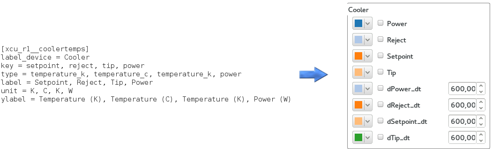
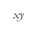
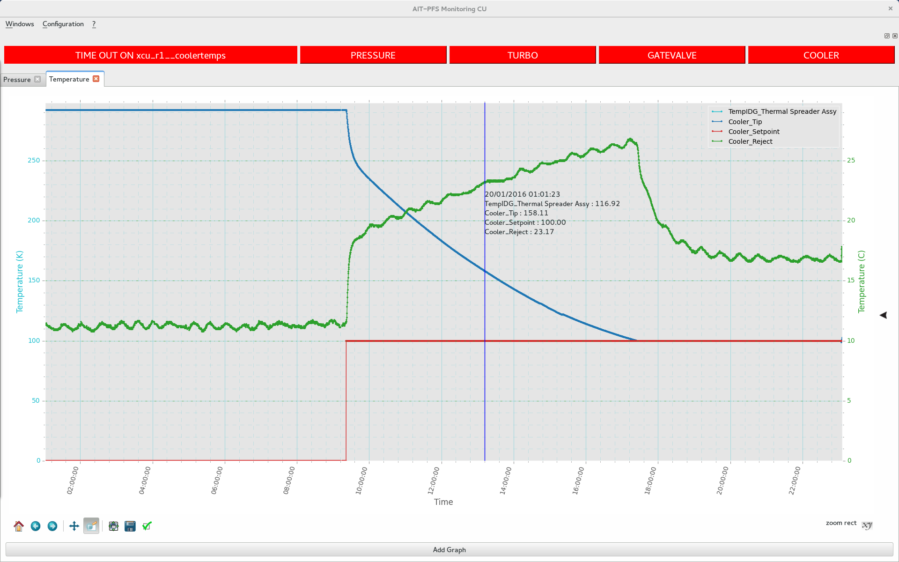

ics_sps_engineering_plotData¶
ics_sps_engineering_plotData is a flexible tool which allows you to plot data and custom your figures.
In this guide, You will be shown how to configure it properly and its differents functionalities will be detailed.
How to run ?¶
First, If you’re planning to begin a real-time data monitoring, please be sure that :
- Tron is started
- Ics_archiver is running
Launch the following command from a terminal :
python main.py ip_database port_database
Example : python main.py 10.1.1.1 5432
By default if arguments are not provided :
- ip_database : localhost
- port_database : 5432
Main screen¶
Once you start, you can see the main screen with its differents widgets.
Time out¶

This label has two states :
- ACQUISITION : All data are up-to-date.
- Time out on device : No data coming in for this device since 90 seconds
This time out limit value can be edited in alarm.py.
Alarms¶

These buttons are showing alarms on criticals devices when unexpected value are reached :
- Ion gauge pressure < 1e-4 Torr
- Turbo speed < 90000 RPM
- Gatevalve closed
- Cooler power < 70 W or > 245 W.
These threshold values can be modified in alarm.py
You can click also click on each button to get more details.
Calendar¶

This button allow to choose the beginning date of your plots.
By default the plots will start from the current day.
Add Tab/Graph¶
In Engineering_plotData, graphics are located and sorted into tabs.
To open your first tab, find “Add a new tab” in the Windows menu.
You can now click on “Add graph” and your first plotting area will be set.
Configuration¶
This software has been made to be dynamic, it relies on an editable configuration file curve_config.cfg.
This file is located in Engineering_plotData/config
In the database, the archiver follows always the same structure :
One table per device and one field per keyword.
Let’s take a device as an example : The Cooler which has four keywords : setpoint, reject, tip, power

- [xcu_r1__coolertemps] : [the tablename in your database]
- label_device : it will be the name of the Box
- key : fieldnames in your database (separated with coma)
- type : type of curves (separated with coma)
- label : name of your curves (separated with coma)
- unit : unit of your curves (separated with coma)
- ylabel : name of y axis (separated with coma)
Functionalities¶
Add/remove curves¶
You can add / remove curves by checking / unchecking the matching boxes.
Curves colors can be customized as well.

They will be sorted by type. So they can be plotted on the same axis with respect to their scale ( Log for pressure, linear otherwise).
A graph can hold maximum two types of curves at a time ( one on each yaxis ).
Slopes¶
You can also plot the slope of your curve with a chosen delta in seconds :
The slope is calculated with the following formula :
This curve is automatically updated as data are coming in.
Toolbar¶
You have one toolbar above with differents functions :

- Reset original view
- Back to previous view
- Forward to next view
- Pan axes yaxis rescaling will not be done until this option is checked
- Zoom yaxis and time rescaling will not be done until this option is checked
- Configure subplots ( Non implemented )
- Save your graph as a png
- Custom your axes select your axe and customize your time and yaxis limits

Vertical cursor¶
A vertical cursor can be activated/desactivated by clicking on the following button in the bottom-right side.
 It shows for each curve the closest value matching with the chosen time.
Note that this option can use a lot of resources especially on a large dataset.